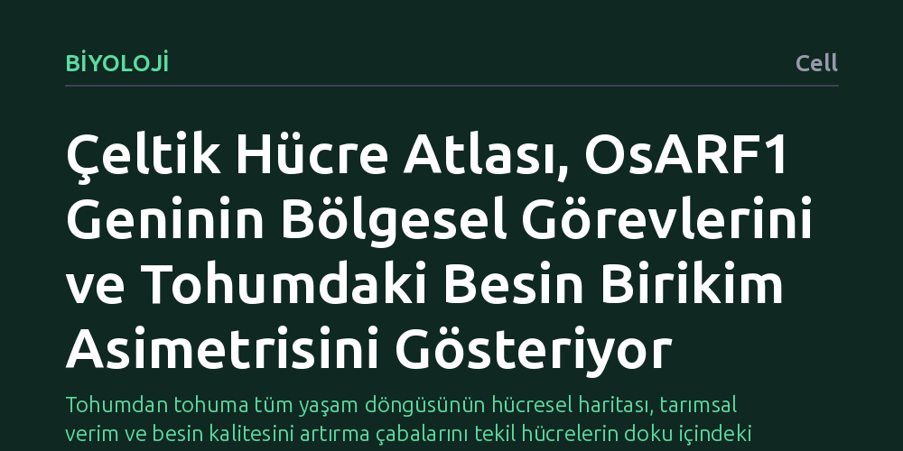

BIYOLOJI · Cell · 2026-10-15
Araştırmacılar, çeltiğin tohumdan tohuma tüm yaşam döngüsünü kapsayan üç boyutlu hücresel bir atlas geliştirdi. Bu çalışma, hücrelerin gelişim yörüngelerini ortaya koyarken OsARF1 geninin bölgesel rollerini ve besi dokusundaki nişasta-protein birikim asimetrisini aydınlattı.
Tohumdan tohuma tüm yaşam döngüsünün hücresel haritası, tarımsal verim ve besin kalitesini artırma çabalarını tekil hücrelerin doku içindeki kesin konumlarına bağlayarak anlamamızı sağlıyor.

Pirinç, dünya nüfusunun yarısından fazlasının temel kalori kaynağıdır. Ancak bir çeltik tohumunun filizlenip kök, gövde, yaprak ve çiçek oluşturarak nihayetinde yeni tohumlar üretmesine kadar geçen karmaşık yolculuk, hücresel düzeyde büyük gizemler barındırıyordu. Klasik biyolojik analizler çoğunlukla dokuları parçalayarak hücreleri inceler; bu yaklaşım hangi genlerin devrede olduğunu gösterse de o hücrenin komşularıyla nerede ve nasıl etkileştiği bilgisini yok eder.
Bir bitki gelişiminin sırrı yalnızca hangi proteinlerin üretildiğinde değil, bu üretimin dokunun tam olarak neresinde ve gelişim döngüsünün hangi anında gerçekleştiğinde yatar. Hücreler arasındaki mekânsal koordinasyon anlaşılmadan, tohum kalitesini ve bitki verimini belirleyen gelişimsel süreçleri tam anlamıyla denetlemek mümkün değildir.
Araştırma ekibi, çeltik bitkisinin tüm yaşam döngüsünü tohumdan başlayıp bir sonraki nesil tohumun olgunlaşmasına kadar kesintisiz bir biçimde takip etti. Dokulardaki hücrelerin özgün fiziksel konumlarını kaybetmeden genetik etkinliklerini ölçen üç boyutlu mekânsal ve zamansal hücre haritalama teknolojisi kullanıldı.
Bu yöntem sayesinde araştırmacılar, bitkinin gelişimsel yörüngelerini adım adım haritalandırdı. Hücrelerin zaman içinde hangi kimliklere büründüğü, hangi sinyallerle yönlendirildiği ve dokusal mimarinin üç boyutlu uzayda nasıl şekillendiği tekil hücre çözünürlüğünde somut verilerle ortaya kondu.
Elde edilen mekânsal atlas iki temel biyolojik gerçeği gün yüzüne çıkardı. İlk olarak, bitki gelişimini yönlendiren kilit genlerden biri olan OsARF1 faktörünün tek bir sabit görev yerine, dokunun farklı bölgelerinde mekânsal olarak tamamen ayrışan, özelleşmiş roller üstlendiği saptandı. Bir genin farklı anatomik konumlarda farklı hücresel talimatlar vermesi, bitkisel koordinasyonun ne kadar ince ayarlı olduğunu gösterdi.
İkinci kritik bulgu ise çeltik tohumunun besi dokusundaki (endosperm) yapısal organizasyon oldu. Tohumun sırt ve karın eksenleri arasında belirgin bir asimetri keşfedildi. Bu asimetrinin, tohumun bir tarafında nişastanın, diğer tarafında ise proteinlerin nasıl ve ne yoğunlukta depolandığını doğrudan belirlediği anlaşıldı.
Bu bulgular, bitki biyolojisine ve tarımsal ıslah çalışmalarına bakış açımızı dönüştürecek nitelikte bir zemin sunuyor. Tohumdaki nişasta ve protein dağılımını belirleyen mekânsal asimetrinin çözülmesi, pirincin besin değerini ve pişme kalitesini hücresel hassasiyetle optimize etmenin kapısını aralıyor.
Ayrıca OsARF1 gibi kilit düzenleyicilerin dokuya özgü çalışma mekanizmalarının bilinmesi, bitkinin genel gelişim dengesini bozmadan sadece hedeflenen dokularda verim artışı sağlayacak hassas tarımsal mühendislik yaklaşımlarına rehberlik edecektir.